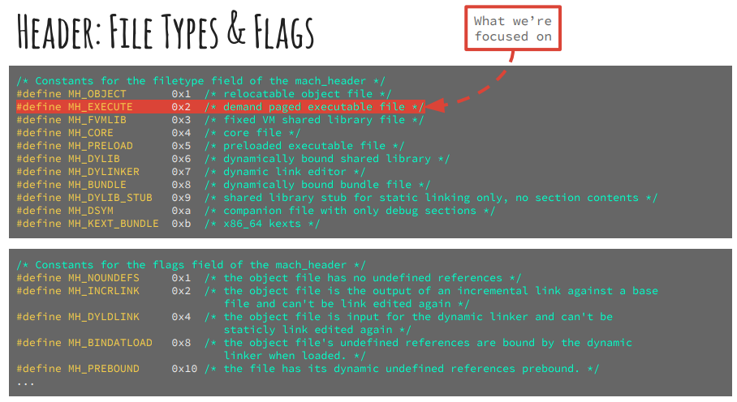
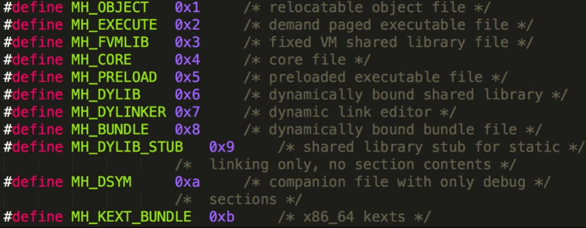

Mach-O的Header的filetype
常见文件类型filetype
- Mach-O的filetype
- 文件类型概述：Executables, bundles, dylibs, kexts, cores等等
- 常见文件类型
MH_EXECUTE=可执行文件=executable=应用- 文件：
.app/xxx- 
- 文件：
MH_OBJECT- 目标文件
- 文件：
.o
- 文件：
- 静态库文件=静态链接库=
static library：N个.o合并在一起- 文件：
.a
- 文件：
- 目标文件
MH_DYLIB=动态链接库=dylib library：类似于Win中的DLL- 文件：
.dylib、.framework/xxx
- 文件：
MH_DYLINKER：动态链接编辑器- 文件：
/usr/lib/dyld
- 文件：
MH_DSYM：存储着二进制文件符号信息的文件- 文件：
.dSYM/Contents/Resources/DWARF/xxx- 常用于分析APP的崩溃信息
- 调试信息保存在：dSYM文件
- 常用于分析APP的崩溃信息
- 文件：
全部文件类型解释
- 全部文件类型解释
MH_OBJECT- The MH_OBJECT file type is the format used for intermediate object files. It is a very compact format containing all its sections in one segment. The compiler and assembler usually create one MH_OBJECT file for each source code file. By convention, the file name extension for this format is .o.
MH_EXECUTE- The MH_EXECUTE file type is the format used by standard executable programs.
MH_BUNDLE- The MH_BUNDLE file type is the type typically used by code that you load at runtime (typically called bundles or plug-ins). By convention, the file name extension for this format is .bundle.
MH_DYLIB- The MH_DYLIB file type is for dynamic shared libraries. It contains some additional tables to support multiple modules. By convention, the file name extension for this format is .dylib, except for the main shared library of a framework, which does not usually have a file name extension.
MH_PRELOAD- The MH_PRELOAD file type is an executable format used for special-purpose programs that are not loaded by the OS X kernel, such as programs burned into programmable ROM chips. Do not confuse this file type with the MH_PREBOUND flag, which is a flag that the static linker sets in the header structure to mark a prebound image.
MH_CORE- The MH_CORE file type is used to store core files, which are traditionally created when a program crashes. Core files store the entire address space of a process at the time it crashed. You can later run gdb on the core file to figure out why the crash occurred.
MH_DYLINKER- The MH_DYLINKER file type is the type of a dynamic linker shared library. This is the type of the dyld file.
MH_DSYM- The MH_DSYM file type designates files that store symbol information for a corresponding binary file.
filetype的定义
- 
源码定义：
/*
* The layout of the file depends on the filetype. For all but the MH_OBJECT
* file type the segments are padded out and aligned on a segment alignment
* boundary for efficient demand pageing. The MH_EXECUTE, MH_FVMLIB, MH_DYLIB,
* MH_DYLINKER and MH_BUNDLE file types also have the headers included as part
* of their first segment.
*
* The file type MH_OBJECT is a compact format intended as output of the
* assembler and input (and possibly output) of the link editor (the .o
* format). All sections are in one unnamed segment with no segment padding.
* This format is used as an executable format when the file is so small the
* segment padding greatly increases its size.
*
* The file type MH_PRELOAD is an executable format intended for things that
* are not executed under the kernel (proms, stand alones, kernels, etc). The
* format can be executed under the kernel but may demand paged it and not
* preload it before execution.
*
* A core file is in MH_CORE format and can be any in an arbritray legal
* Mach-O file.
*
* Constants for the filetype field of the mach_header
*/
#define MH_OBJECT 0x1 /* relocatable object file */
#define MH_EXECUTE 0x2 /* demand paged executable file */
#define MH_FVMLIB 0x3 /* fixed VM shared library file */
#define MH_CORE 0x4 /* core file */
#define MH_PRELOAD 0x5 /* preloaded executable file */
#define MH_DYLIB 0x6 /* dynamically bound shared library */
#define MH_DYLINKER 0x7 /* dynamic link editor */
#define MH_BUNDLE 0x8 /* dynamically bound bundle file */
#define MH_DYLIB_STUB 0x9 /* shared library stub for static */
/* linking only, no section contents */
#define MH_DSYM 0xa /* companion file with only debug */
/* sections */
#define MH_KEXT_BUNDLE 0xb /* x86_64 kexts */